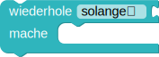
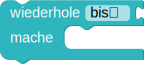

Arrows
Programmiere den Roboter:
Er soll den Schatz  bergen.
Dafür muss er dem Weg folgen, den ihm die Pfeile vorgeben.
bergen.
Dafür muss er dem Weg folgen, den ihm die Pfeile vorgeben.
Weitere Hinweise:
Der Baustein  bzw.  wiederholt etwas solange bzw. bis eine Bedingung erfüllt ist. Dieser Baustein wird genutzt, wenn man die Anzahl der Wiederholungen im Voraus nicht kennt.
Hier kennst du die Anzahl der Felder zwischen Roboter und Schatztruhe nicht. Hier weißt du nicht, wie viele Pfeile in eine Richtung aufeinander folgen.